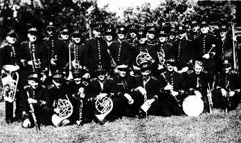
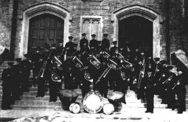
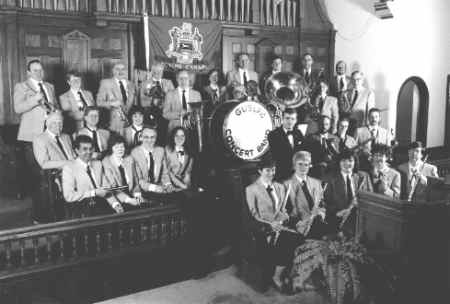
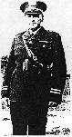
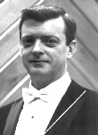
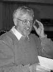

GUELPH CONCERT BAND - OLD PHOTOS OF THE BAND
Band Photos
-
Past Conductors
BAND PHOTOGRAPHS
Band in front of City Hall. c. 1914, with William Philp, conductor, standing behind bass drum.
Philp directed the band from 1878-1882 and 1910-1922, and was the GCB's founding conductor.

A picture of the Guelph Concert Band when it was known as the Guelph Musical Society Band
at an unknown outdoor location in 1937.

A picture of the Guelph Concert Band when it was known as the Guelph Musical Society Band
infront of War Memorial Hall, 1948. Dundas S. Heron, conductor from 1945-1964

Guelph Concert Band inside of Paisley Memorial United Church, 1995.
Bill Hughes, conductor from 1993-1998.
PAST CONDUCTORS

Norman H. Philp
(bandmaster: 1878-1882)
(bandmaster: 1910-1922)

Bill Hughes
(conductor: 1993-1998)

Ken Dearlove
(conductor: 1999)
[ - Return to History Index Page - ]
Site Contents © Guelph Concert Band.All rights reserved.
Site Last Updated: August 6, 20000